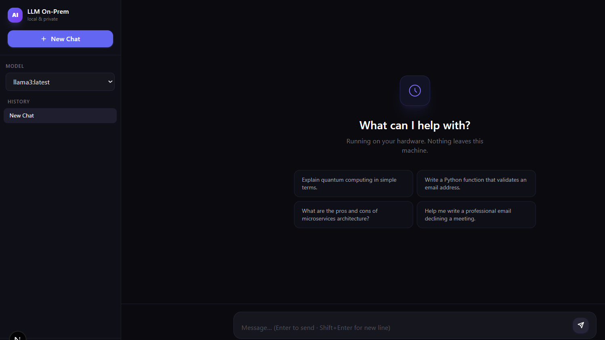
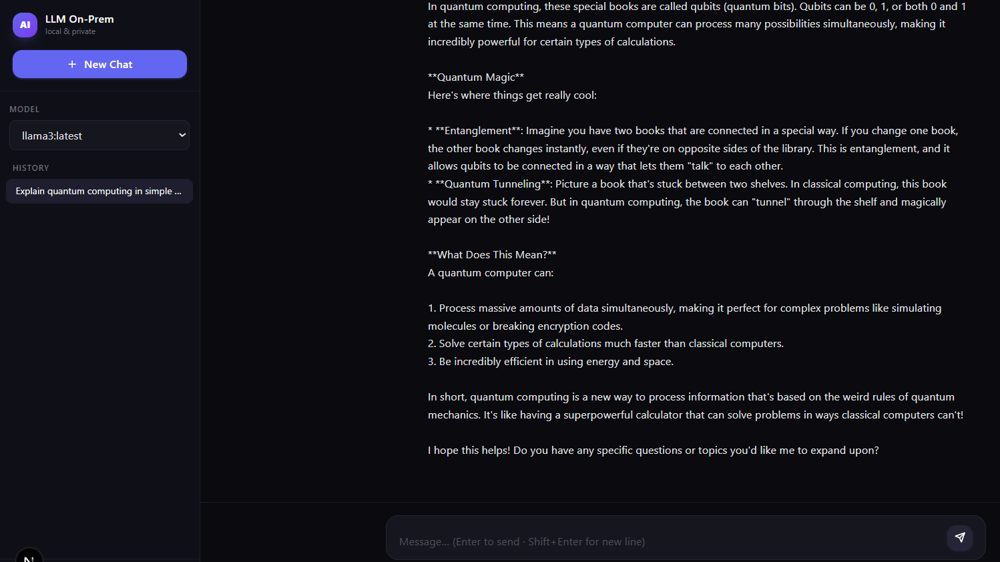

What is Playwright MCP?
Playwright MCP (Model Context Protocol) is a tool that gives AI assistants like GitHub Copilot full browser control — navigation, clicking, typing, screenshot capture, and DOM inspection — all driven by natural language instructions. In this demo, Copilot autonomously opened the app, clicked a suggestion, sent a message to the local LLM, waited for the streamed response to complete, and captured evidence at every step. No manual browser interaction was required.
App Launch — Fresh State
Playwright MCP navigated to http://localhost:3000 and captured the initial UI.

Send a Prompt
Copilot clicked the "Explain quantum computing" suggestion, then hit Send.

Full AI Response
Playwright waited for streaming to finish, then scrolled to capture the complete reply.

✅ Run Summary
Full Actions Log
Every Playwright MCP call made during this session, in order.
npm run dev) on port 3000 with Turbopack.http://localhost:3000 — obtained pageId for all subsequent calls.